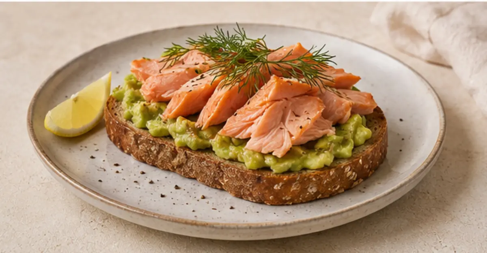

20 recetas · fáciles · nutritivas
Comer bien,
sin complicarte.
Ideas reales para disfrutar cada día: ingredientes sencillos, pasos claros e información nutricional orientativa.
20recetas
≤ 40minutos
100%sabrosas

fibra color energíaUna fórmula sencilla
Construye un plato que te cuide
½Verduras y frutasColor, fibra y variedad
¼ProteínaAnimal o vegetal
¼Cereal integralEnergía que dura
+Grasa saludableAceite de oliva, semillas o frutos secos
Tu menú, a tu manera
Encuentra tu próxima receta
Cargando recetas…
No encontramos coincidencias
Prueba con otro ingrediente o elimina algún filtro.
Para guardar y compartir
Las 20 recetas, también en PDF
Un recetario cuidado, listo para consultar sin conexión o imprimir.